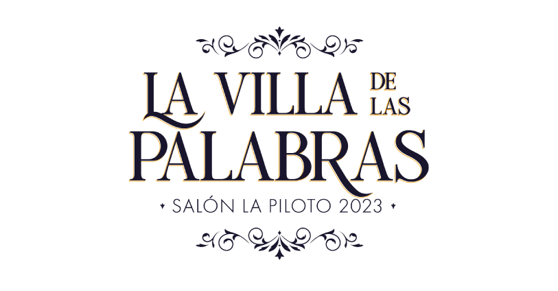
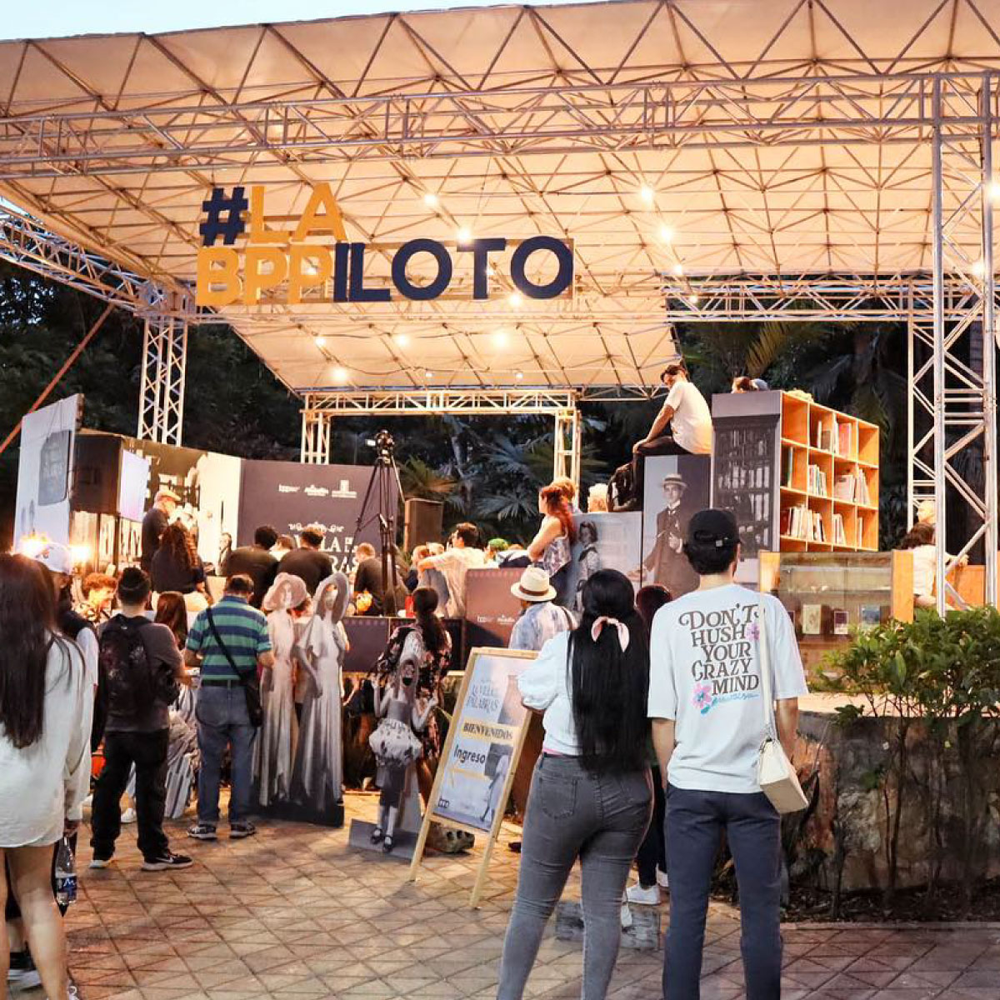
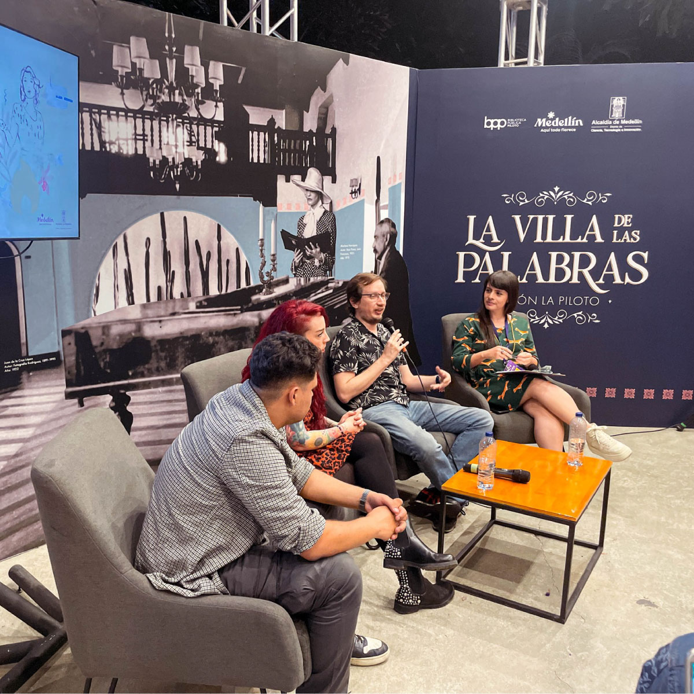
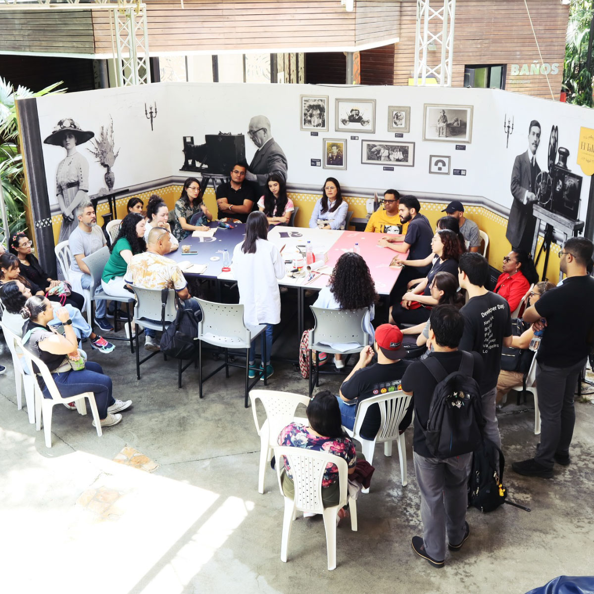
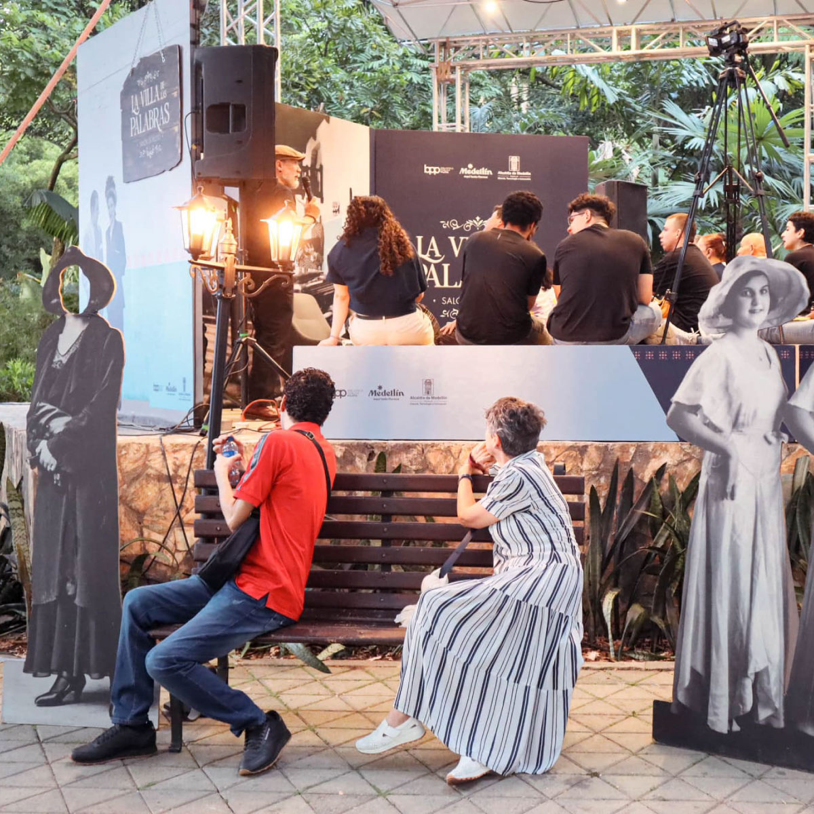

Diseño de identidad visual, manual de marca y Stand
Diseño de la identidad visual y montaje para el Salón La Piloto, stand de la Biblioteca Pública Piloto que se realiza en el marco de la fiesta del libro y la cultura en la ciudad de Medellín.

El diseño de la identidad visual tuvo como inspiración las villas y pueblos colombianos, sus fachadas coloridas, sus puertas y ventanas coloniales. Para la identidad gráfica se combinaron imágenes del archivo fotográfico de la BPP, creando collages que se acompañaron con patrones en vectores para generar los zócalos y Pop ups en mdf para generar relieves en los espacios.
Se logró construir una identidad visual y un stand coherente que representa las de tradiciones, y la arquitectura colonial en Colombia.




Creditos de las fotografías. Autora: Laura Cristina Osorio Rendón
Las fotografías utilizadas fueron realizadas por la Comunicadora Audiovisual y Multimedial de la BPP. Su uso es únicamente demostrativo y no existe el lucro directo o indirecto con la obra expuesta.